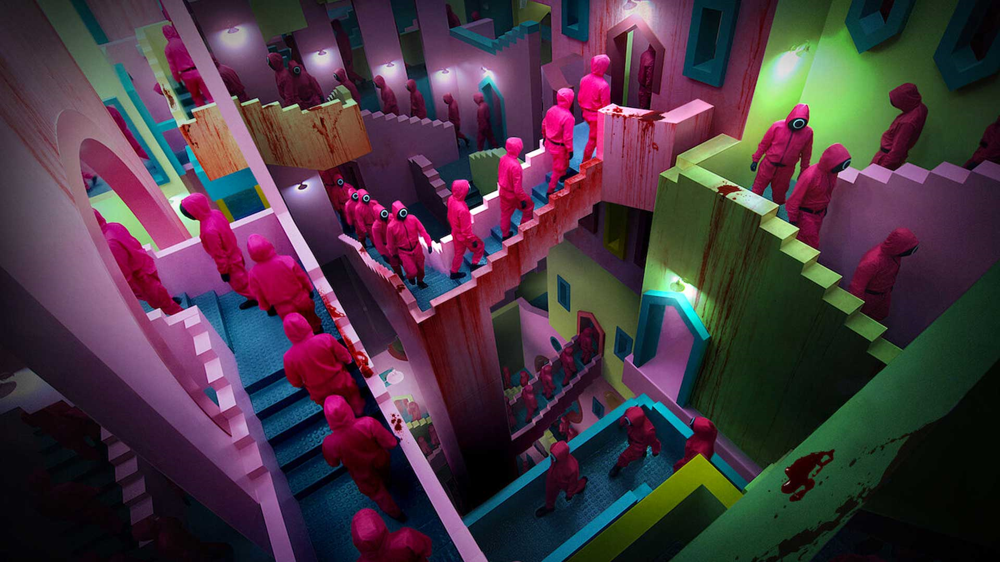
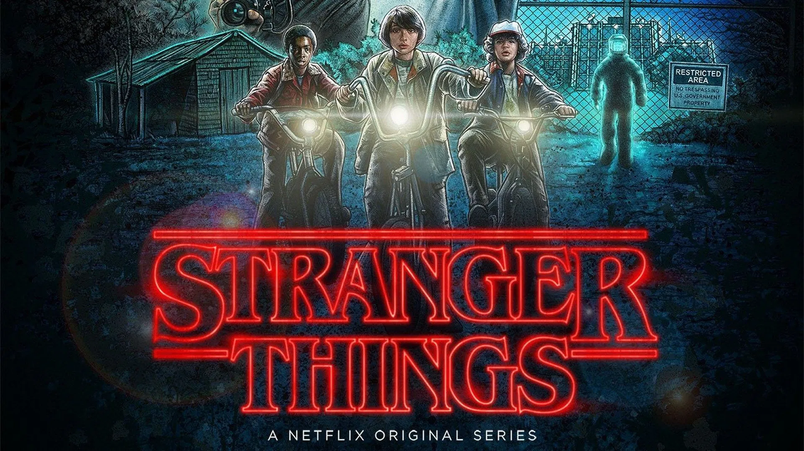

- INFANTIL
-

Homem-Aranha: Sem Volta Para Casa
Peter Parker precisará lidar com as consequências da sua identidade como o herói mais querido do mundo após ter sido revelada pela reportagem do Clarim Diário, com uma gravação feita por Mysterio no filme anterior. Incapaz de separar sua vida normal das aventuras de ser um super-herói, além de ter sua reputação arruinada por acharem que foi ele quem matou Mysterio e pondo em risco seus entes mais queridos, Parker pede ao Doutor Estranho para que todos esqueçam sua verdadeira identidade.
Populares na Netflix
-
Capitão América: Guerra Civil -
Pantera Negra -

The Batman -
Sonic The Hedgehog 2
-

The Walking Dead -

Round 6 -

Peaky Blinders -

Stranger Things